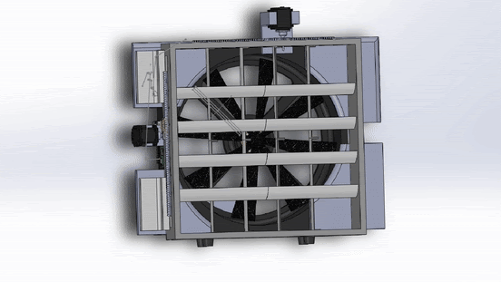
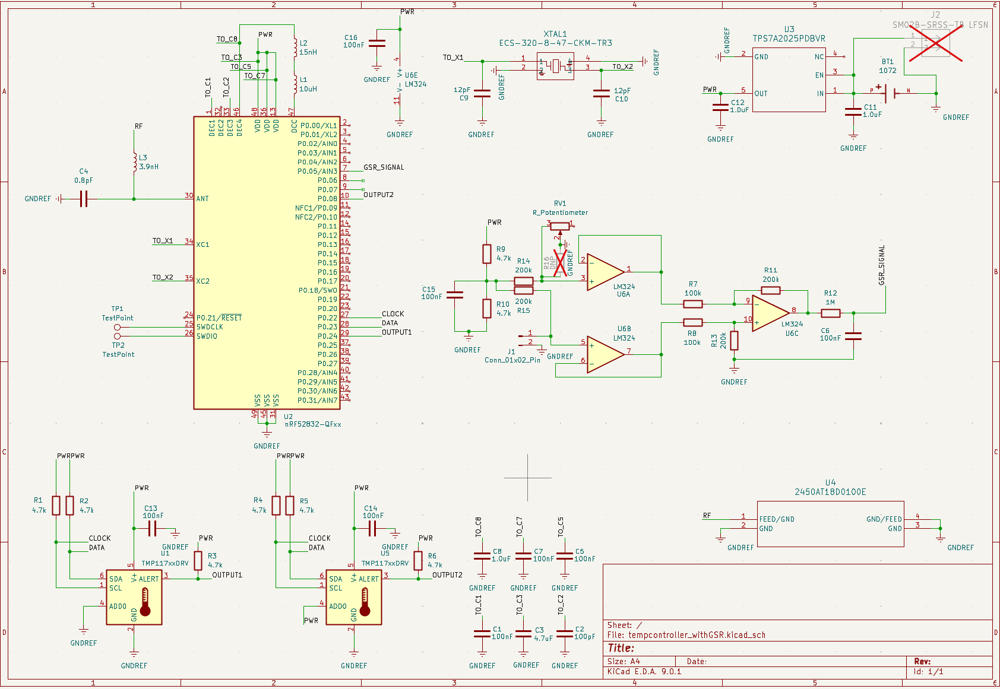
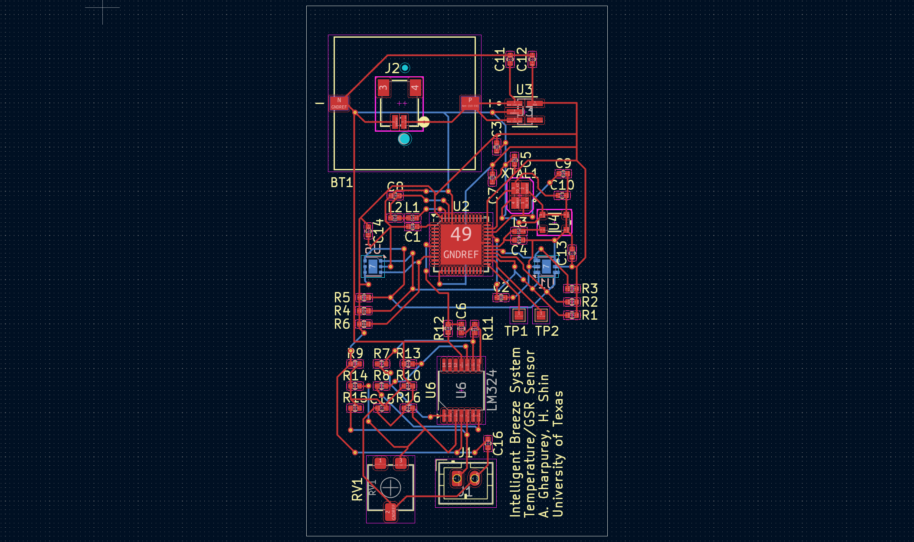
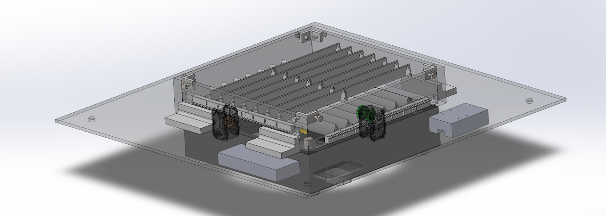
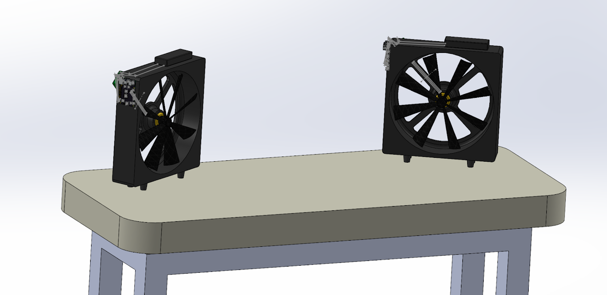

Overview
When people think of robotics, they usually picture humanoid machines from science fiction. In practice, the field extends far beyond that. This project focuses on a human-centered system that uses real-time electrodermal and skin temperature sensing to autonomously control airflow through an embedded electromechanical platform.
Because this work is part of an ongoing innovation effort, this page highlights selected mechanical and electrical design elements from the prototype.

Prototype overview from the Human-Centered Robotics Laboratory project.
Autonomous Rotation Mechanism for Airflow-Steering Fins
The fin steering assembly uses a DYNAMIXEL MX-64T servo motor to direct the airflow generated by the central fan. This enables dynamic control of where airflow is delivered in response to sensed physiological input.

Servo-driven mechanism used to orient airflow-steering fins.
PCB Schematic of EDA-TTS-v1
EDA-TTS-v1 (Electrodermal Activity and Temperature Transmitter Sensor) captures physiological signals and passes them into the embedded control pipeline.

Electrical schematic for the first EDA and temperature sensing board.
PCB Layout of EDA-TTS-v1
The board layout was designed for compact integration and clean signal routing while supporting wearable sensing and wireless transmission requirements.

PCB layout implementation of the EDA-TTS-v1 sensing hardware.
3D CAD Model of Overhead Tunnel
Designed in SolidWorks, this top assembly rests on a 2 ft x 2 ft x 7.5 ft 8020 aluminum frame and channels directional airflow through the tunnel structure.

SolidWorks CAD model of the overhead tunnel structure.
3D CAD Model of Breeze Generator for Office/Home Setting
This SolidWorks model adapts the concept to a desktop setting, with a work area approximated at 5 ft x 2 ft for practical office and home use.

Desktop-oriented concept of the breeze generator platform.
Video Demonstration of V1 Prototype
This demonstration combines the major system components in a full prototype run. The PCB was also revised to a wristwatch-style form factor for easier wearability and improved user comfort.
Future versions are planned to include real-time user tracking so airflow can actively follow the user, along with improved sweat recognition performance.
Full V1 demonstration video.
Project Technical Report (PDF)
Detailed documentation of the system design, implementation, and results.